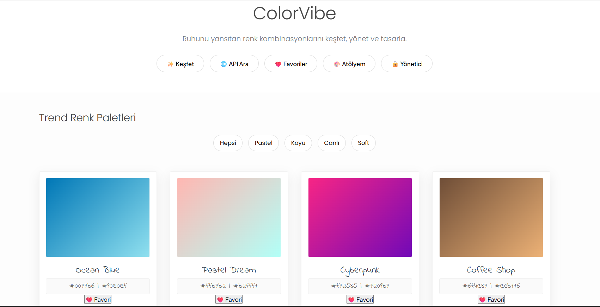
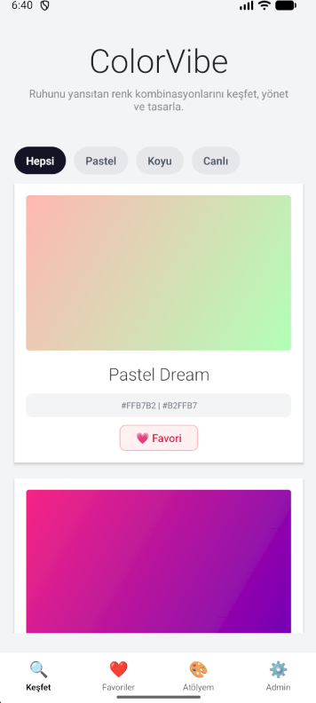
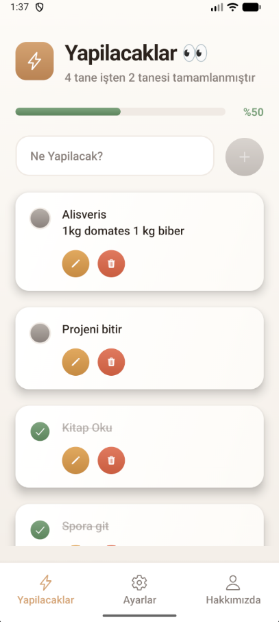

Mobil uygulama ile entegre çalışan, tarayıcı üzerinden paletleri dinamik filtreleme ve kart yönetimi sunan web arayüzü.

>Polaroid tarzı kart arayüzü ile özel renk paletleri üretmeyi ve bunları "Atölyem" kısmında saklamayı sağlayan mobil uygulama

Kullanıcı deneyimini ön planda tutan minimalist tasarımlı ve gelişmiş filtreleme özellikli mobil yapılacaklar listesi uygulaması.
Python, Pandas ve Seaborn kullanarak yaptığım detaylı video oyun satış analizi ve veri görselleştirme çalışması.